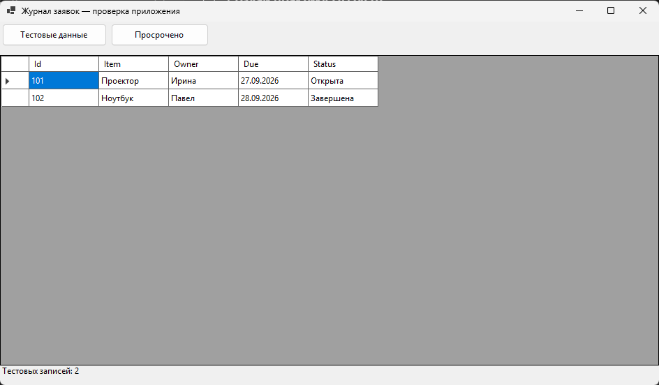
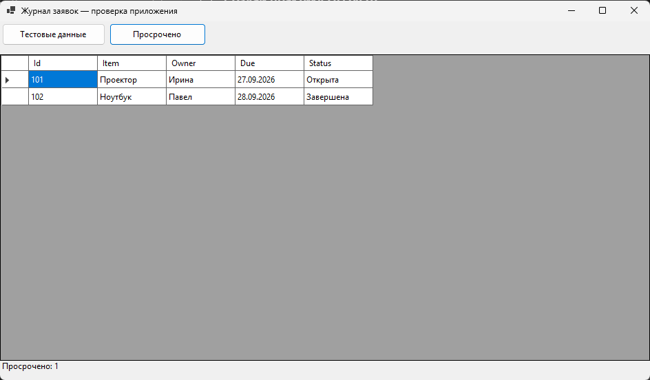
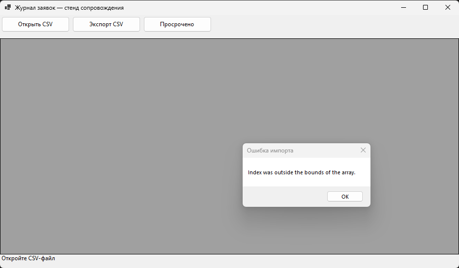
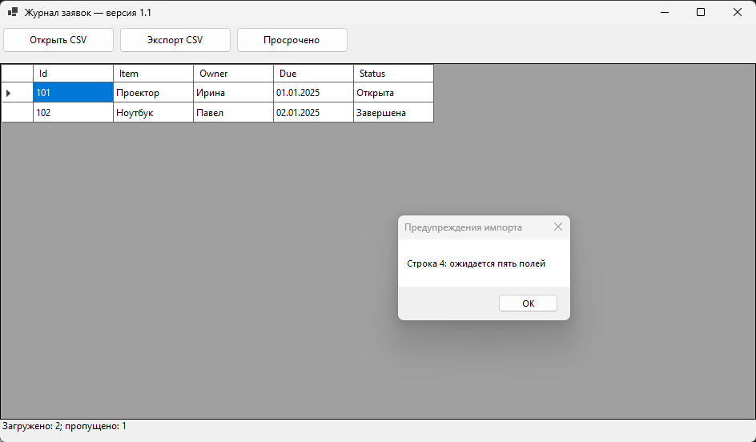
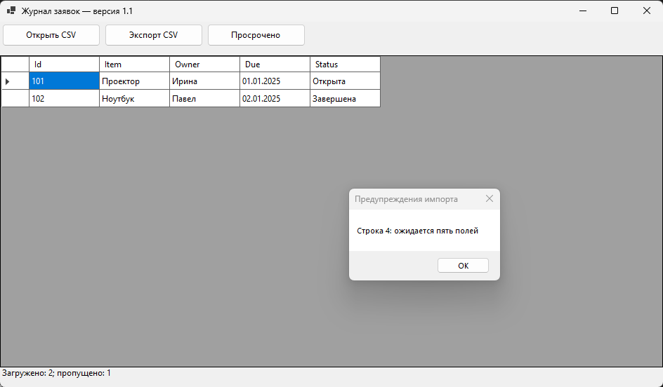
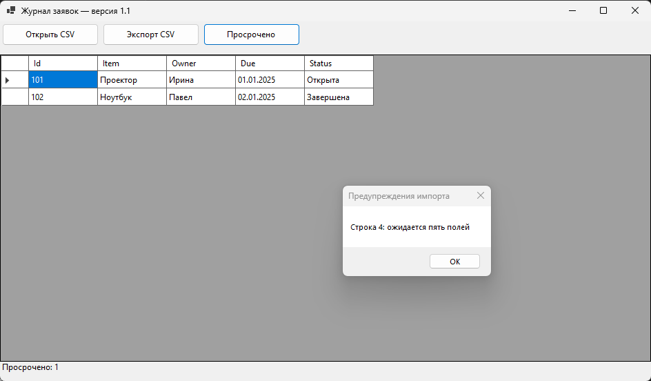

Сервисный журнал учебного центра
Отдельный пример: проектор и ноутбук, одна неполная запись принтера.
Учебный маршрут / 2026-2027
Сборка приложения C# Windows Forms, затем подключение CSV · 30 индивидуальных вариантов
Учебный комплектОтдельный пример: проектор и ноутбук, одна неполная запись принтера.
Демонстрация: сервисный журнал учебного центра
Скачайте ServiceDesk-source.zip и распакуйте его в отдельную папку. Откройте ServiceDesk.csproj в Visual Studio. Выполните сборку и запустите окно «Журнал заявок — проверка приложения». На этом этапе CSV не скачивайте и не подключайте.
Нажмите «Тестовые данные». Таблица должна показать проектор и ноутбук: одна открытая заявка с прошедшей датой и одна завершённая. Внизу ожидается «Тестовых записей: 2». Нажмите «Просрочено»: ожидается 1.
Сохраните рабочую копию проекта и два реальных снимка: таблица после загрузки и счётчик. Если сборка или подсчёт не прошли, исправьте их до подключения CSV. Это отделяет ошибку приложения от ошибки обмена данными.


Только после проверки приложения
Только после проверки стартового приложения создайте вторую копию проекта. Откройте ServiceDesk-csv-draft.zip как пример первого подключения: добавьте в свою копию кнопки «Открыть CSV» и «Экспорт CSV», чтение файла и вывод записей в ту же таблицу. Сохраните исходную проверенную копию для сравнения.
CSV здесь — текст с заголовком Id;Item;Owner;Due;Status. Разделитель — точка с запятой, дата — dd.MM.yyyy, статус — Открыта или Завершена. Каждая следующая строка содержит ровно пять полей.
После появления кнопки «Открыть CSV» выберите demo.csv. В первой интеграции неполная строка 4 вызывает окно ошибки; корректные строки не отображаются. Запишите строку, сообщение и версию проекта.
Создайте копию demo-valid.csv без дефектной строки и откройте её. Экспортируйте данные, затем откройте экспорт: формат расходится с исходным. Нажмите «Просрочено»: завершённая запись с прошедшей датой попадает в счётчик.

D1: одна плохая запись не прерывает работу
В CsvStore.Read обработайте каждую строку отдельно. Сначала Split с «;», затем проверьте Length == 5. Используйте int.TryParse и DateTime.TryParseExact с InvariantCulture. Пустое обязательное поле и неизвестный статус тоже дают предупреждение с номером строки. Продолжайте чтение оставшихся строк.
Верните вместе со списком записей перечень предупреждений; после загрузки покажите количество пропусков и подробности. Ошибку отсутствующего файла оставьте отдельной общей ошибкой. Для demo.csv ожидаются две загруженные записи и одно предупреждение.
Повторите импорт demo.csv. Убедитесь, что записи 101 и 102 видны, строка 4 пропущена, а сообщение указывает её номер. Затем отдельно проверьте неверный Id и дату.


D2 и D3: совместимость и бизнес-правило
В CsvStore.Write замените запятые на «;», заголовок на исходный и формат даты на dd.MM.yyyy с InvariantCulture. Запретите разделитель и перевод строки внутри полей либо реализуйте согласованное экранирование при чтении и записи. Для стенда достаточно явной проверки этих символов.
Экспортируйте исправленно загруженные записи в новый файл. Откройте его в том же приложении и сравните Id, Item, Owner, Due, Status построчно. Ожидаются две записи без предупреждений.
В CountOverdue добавьте условие Status != «Завершена»; дату сравнивайте по Date без времени. Запись с датой сегодня не просрочена. На демонстрационных данных исходный ошибочный счёт равен двум, исправленный — одному, если обе даты уже прошли.

Завершение сопровождения
Составьте таблицу: входные данные, ожидаемое, фактическое, результат, скриншот. Проверьте правильный файл, неполную строку, неверный Id и дату, пустой набор, импорт после экспорта, завершённую запись и дату сегодня. После правки снова проверьте исходные сценарии.
Укажите номер версии 1.1, дату сборки, список D1–D3 и добавленное правило варианта. Сделайте резервную копию CSV. Пакет содержит исполняемые файлы и инструкцию; при откате восстановите предыдущую программу и копию CSV. Не удаляйте рабочие данные.
Опишите кнопки «Открыть CSV», «Экспорт CSV», «Просрочено», значение предупреждений и порядок обращения при ошибке. Проверьте инструкцию по реальному экрану программы. В отчёт вставьте фактические снимки и результаты.
Проверенная основа
Это полный исходный код стартового приложения, проверенного на двух встроенных записях. Его следует собрать и проверить прежде, чем добавлять чтение CSV.
using System.Windows.Forms;
namespace ServiceDesk;
internal record Ticket(int Id, string Item, string Owner, DateTime Due, string Status);
internal static class TestData
{
public static List<Ticket> Create(DateTime today) =>
[
new Ticket(101, "Проектор", "Ирина", today.AddDays(-2), "Открыта"),
new Ticket(102, "Ноутбук", "Павел", today.AddDays(-1), "Завершена")
];
public static int CountOverdue(IEnumerable<Ticket> tickets, DateTime today) =>
tickets.Count(t => t.Status != "Завершена" && t.Due.Date < today.Date);
}
internal sealed class MainForm : Form
{
private readonly DataGridView grid = new() { Dock = DockStyle.Fill, ReadOnly = true, AutoGenerateColumns = true };
private readonly Label status = new() { Dock = DockStyle.Bottom, Height = 28, Text = "Сначала загрузите встроенные тестовые данные" };
private List<Ticket> tickets = new();
public MainForm(bool showTestData = false)
{
Text = "Журнал заявок — проверка приложения";
Width = 960;
Height = 560;
var bar = new FlowLayoutPanel { Dock = DockStyle.Top, Height = 48 };
var load = new Button { Text = "Тестовые данные", Width = 150, Height = 32 };
var count = new Button { Text = "Просрочено", Width = 140, Height = 32 };
load.Click += (_, _) => LoadTestData();
count.Click += (_, _) => status.Text = $"Просрочено: {TestData.CountOverdue(tickets, DateTime.Today)}";
bar.Controls.AddRange(new Control[] { load, count });
Controls.Add(grid);
Controls.Add(status);
Controls.Add(bar);
if (showTestData) Shown += (_, _) => LoadTestData();
}
private void LoadTestData()
{
tickets = TestData.Create(DateTime.Today);
grid.DataSource = tickets.ToList();
status.Text = $"Тестовых записей: {tickets.Count}";
}
[STAThread]
private static void Main(string[] args)
{
if (args.Length == 1 && args[0] == "--self-test")
{
var data = TestData.Create(DateTime.Today);
Console.WriteLine($"test-records={data.Count}; overdue={TestData.CountOverdue(data, DateTime.Today)}");
return;
}
ApplicationConfiguration.Initialize();
Application.Run(new MainForm(args.Length == 1 && args[0] == "--demo"));
}
}Исходник проверенной демонстрации
Ниже приведён полный файл Program.cs исправленной версии. Откройте его вместе с ServiceDesk-fixed.csproj из архива. Сравните со стартовым приложением и черновой интеграцией по D1, D2 и D3; после этого применяйте изменения к своему варианту. Команда --self-test ПУТЬ_К_CSV выполняет импорт, экспорт и повторное чтение без окна и печатает фактические счётчики.
using System.Globalization;
using System.Text;
using System.Windows.Forms;
namespace ServiceDeskFixed;
internal record Ticket(int Id, string Item, string Owner, DateTime Due, string Status);
internal record ReadResult(List<Ticket> Tickets, List<string> Warnings);
internal static class CsvStore
{
private const string Header = "Id;Item;Owner;Due;Status";
public static ReadResult Read(string path)
{
var tickets = new List<Ticket>();
var warnings = new List<string>();
var lines = File.ReadAllLines(path, Encoding.UTF8);
if (lines.Length == 0 || lines[0].TrimStart('\uFEFF') != Header)
throw new InvalidDataException($"Ожидается заголовок {Header}");
for (int index = 1; index < lines.Length; index++)
{
if (string.IsNullOrWhiteSpace(lines[index])) continue;
var cells = lines[index].Split(';');
string? reason = null;
if (cells.Length != 5) reason = "ожидается пять полей";
else if (!int.TryParse(cells[0], out _)) reason = "неверный Id";
else if (string.IsNullOrWhiteSpace(cells[1]) || string.IsNullOrWhiteSpace(cells[2])) reason = "пустое обязательное поле";
else if (!DateTime.TryParseExact(cells[3], "dd.MM.yyyy", CultureInfo.InvariantCulture, DateTimeStyles.None, out _)) reason = "неверная дата";
else if (cells[4] != "Открыта" && cells[4] != "Завершена") reason = "неверный статус";
if (reason != null) { warnings.Add($"Строка {index + 1}: {reason}"); continue; }
tickets.Add(new Ticket(int.Parse(cells[0], CultureInfo.InvariantCulture), cells[1], cells[2],
DateTime.ParseExact(cells[3], "dd.MM.yyyy", CultureInfo.InvariantCulture), cells[4]));
}
return new ReadResult(tickets, warnings);
}
public static void Write(string path, IEnumerable<Ticket> tickets)
{
var lines = new List<string> { Header };
foreach (var t in tickets)
{
if (new[] { t.Item, t.Owner, t.Status }.Any(value => value.Contains(';') || value.Contains('\n') || value.Contains('\r')))
throw new InvalidDataException("В поле нельзя использовать разделитель или перевод строки");
lines.Add($"{t.Id};{t.Item};{t.Owner};{t.Due.ToString("dd.MM.yyyy", CultureInfo.InvariantCulture)};{t.Status}");
}
File.WriteAllLines(path, lines, Encoding.UTF8);
}
public static int CountOverdue(IEnumerable<Ticket> tickets, DateTime today) =>
tickets.Count(t => t.Status != "Завершена" && t.Due.Date < today.Date);
}
internal sealed class MainForm : Form
{
private readonly DataGridView grid = new() { Dock = DockStyle.Fill, ReadOnly = true, AutoGenerateColumns = true };
private readonly Label status = new() { Dock = DockStyle.Bottom, Height = 28, Text = "Откройте CSV-файл" };
private List<Ticket> tickets = new();
public MainForm(string? demoPath = null)
{
Text = "Журнал заявок — версия 1.1";
Width = 960;
Height = 560;
var bar = new FlowLayoutPanel { Dock = DockStyle.Top, Height = 48 };
var open = new Button { Text = "Открыть CSV", Width = 140, Height = 32 };
var save = new Button { Text = "Экспорт CSV", Width = 140, Height = 32 };
var count = new Button { Text = "Просрочено", Width = 140, Height = 32 };
open.Click += (_, _) => OpenCsv();
save.Click += (_, _) => SaveCsv();
count.Click += (_, _) => status.Text = $"Просрочено: {CsvStore.CountOverdue(tickets, DateTime.Today)}";
bar.Controls.AddRange(new Control[] { open, save, count });
Controls.Add(grid);
Controls.Add(status);
Controls.Add(bar);
if (demoPath != null) Shown += (_, _) => LoadCsv(demoPath);
}
private void OpenCsv()
{
using var dialog = new OpenFileDialog { Filter = "CSV (*.csv)|*.csv" };
if (dialog.ShowDialog() != DialogResult.OK) return;
LoadCsv(dialog.FileName);
}
private void LoadCsv(string path)
{
try
{
var result = CsvStore.Read(path);
tickets = result.Tickets;
grid.DataSource = tickets.ToList();
status.Text = $"Загружено: {tickets.Count}; пропущено: {result.Warnings.Count}";
if (result.Warnings.Count > 0) MessageBox.Show(string.Join(Environment.NewLine, result.Warnings), "Предупреждения импорта");
}
catch (Exception ex) { MessageBox.Show(ex.Message, "Ошибка импорта"); }
}
private void SaveCsv()
{
using var dialog = new SaveFileDialog { Filter = "CSV (*.csv)|*.csv", FileName = "export.csv" };
if (dialog.ShowDialog() != DialogResult.OK) return;
try { CsvStore.Write(dialog.FileName, tickets); status.Text = "Файл сохранён"; }
catch (Exception ex) { MessageBox.Show(ex.Message, "Ошибка экспорта"); }
}
[STAThread]
private static void Main(string[] args)
{
if (args.Length == 2 && args[0] == "--self-test")
{
var result = CsvStore.Read(args[1]);
var target = Path.GetTempFileName();
try
{
CsvStore.Write(target, result.Tickets);
var roundtrip = CsvStore.Read(target);
if (roundtrip.Warnings.Count != 0 || !result.Tickets.SequenceEqual(roundtrip.Tickets))
throw new InvalidOperationException("Повторный импорт не совпал");
Console.WriteLine($"tickets={result.Tickets.Count}; warnings={result.Warnings.Count}; overdue={CsvStore.CountOverdue(result.Tickets, DateTime.Today)}");
foreach (var warning in result.Warnings) Console.WriteLine(warning);
}
finally { File.Delete(target); }
return;
}
ApplicationConfiguration.Initialize();
Application.Run(new MainForm(args.Length == 2 && args[0] == "--demo" ? args[1] : null));
}
}